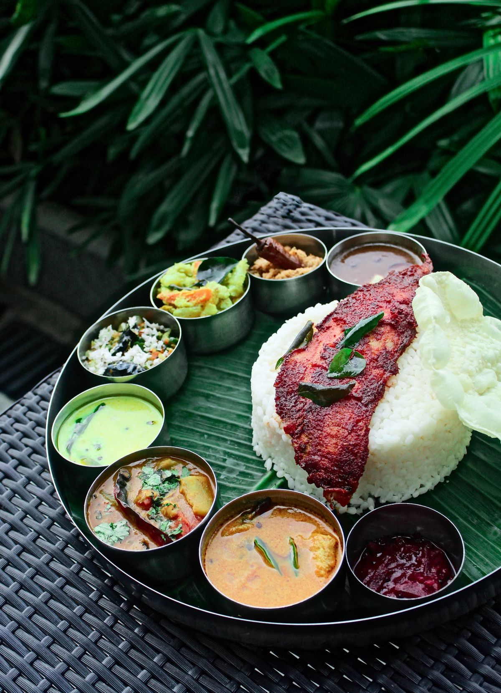

Welcome to our homeWe cook for you.
We cook for you.
For over 20 years.
We wish you a warm welcome into our home. If you'd like to taste and enjoy our authentic Pakistani cuisine, we would love to see you.
Give us a ring to book ahead — especially in the evening, as we often entertain a full house of guests. Come hungry; leave as family.
— The Rana family
